Este documento desarrolla las primeras fases del ciclo de vida de un proyecto de Machine Learning aplicadas a los datos reales de 2025 de un emprendimiento de productos de bienestar (Fuxion). A partir de un libro de Excel mantenido manualmente, se construyo un proceso reproducible —documentado paso a paso con el codigo— de carga, evaluacion de calidad, limpieza, tratamiento de datos ausentes, anonimizacion, normalizacion y analisis exploratorio (univariado, bivariado y multivariado).
El objetivo es responder la pregunta central del negocio: que productos, ciudades y momentos concentran la mayor rentabilidad, para tomar decisiones informadas y dejar la base lista para un futuro modelo predictivo.
Un proyecto de Machine Learning no comienza programando algoritmos, sino entendiendo el problema y los datos. La metodologia CRISP-DM (Cross Industry Standard Process for Data Mining) organiza ese ciclo en seis fases:
El analisis exploratorio de datos (EDA) es el nucleo de las fases 1 a 3: mediante estadistica descriptiva y visualizacion busca patrones, tendencias, relaciones y anomalias. Este trabajo, de Nivel Explorador, abarca precisamente las fases 1, 2 y 3, dejando los datos comprendidos y preparados para un futuro modelo.
El caso es un emprendimiento real de distribucion de productos de bienestar (marca Fuxion) que combina varias fuentes de ingreso: reventa de productos (margen sobre el precio de catalogo), comision por venta directa, comision por afiliacion de nuevas personas a la red, y venta de inventario en distintas ciudades.
Problema detectado: las decisiones de compra de inventario, precios, enfoque geografico y crecimiento de la red se toman de forma intuitiva, sin apoyo en los datos historicos. Esto genera capital inmovilizado, riesgo de vencimiento de productos y desconocimiento de la rentabilidad real.
Stakeholders (partes interesadas): la emprendedora o duena del negocio (decisiones de compra y enfoque), la red de afiliados (que planes y productos funcionan mejor), los clientes finales (disponibilidad de los productos que demandan) y el analista de datos (convertir los registros en decisiones).
Fuente de datos: un libro de Excel de gestion (seguimiento_fuxion_2025.xlsx) con 10 hojas que cubren pedidos, inventario por ciudad, ventas directas, afiliaciones, gastos y un resumen de ganancias.
Toda la preparacion y el analisis se realizaron en Python (pandas y numpy) dentro de un Jupyter Notebook. A continuacion se documenta el codigo por etapas, con la explicacion de cada decision.
Se importan las librerias, se define un estilo visual consistente y se localiza automaticamente la raiz del proyecto para que el notebook funcione tanto desde la raiz como desde la carpeta de notebooks.
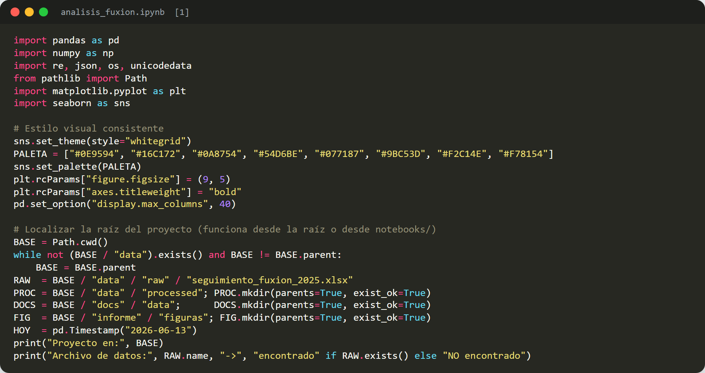
Se cargan todas las hojas del libro y se cuenta cuantas filas con datos tiene cada una, para tener una vision general de las fuentes disponibles.
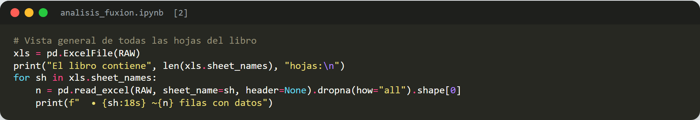
Al ser un libro mantenido manualmente, presenta los problemas tipicos de los datos del mundo real. Se inspecciona la hoja principal de pedidos para evidenciarlos. Por privacidad, en la vista se ocultan las columnas con nombres de clientes.
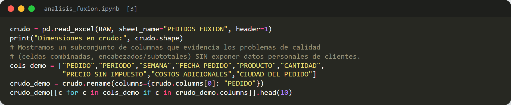
Problemas detectados: (1) celdas combinadas que dejan valores NaN; (2) encabezados repetidos entre bloques de pedidos; (3) filas de subtotales mezcladas con el detalle; (4) nombres de productos inconsistentes (NOCARB-T / NOCARBO-T, VITA XTRA T / VITA XTRA T+, KIT DETOX / DETOX); (5) ciudades inconsistentes (MANIZALES / MANIZALEZ); (6) valores monetarios escritos como texto; (7) datos personales de clientes.
Se definen utilidades reutilizables para estandarizar texto, unificar nombres de productos y ciudades, convertir valores a numero y anonimizar nombres reemplazandolos por identificadores estables.
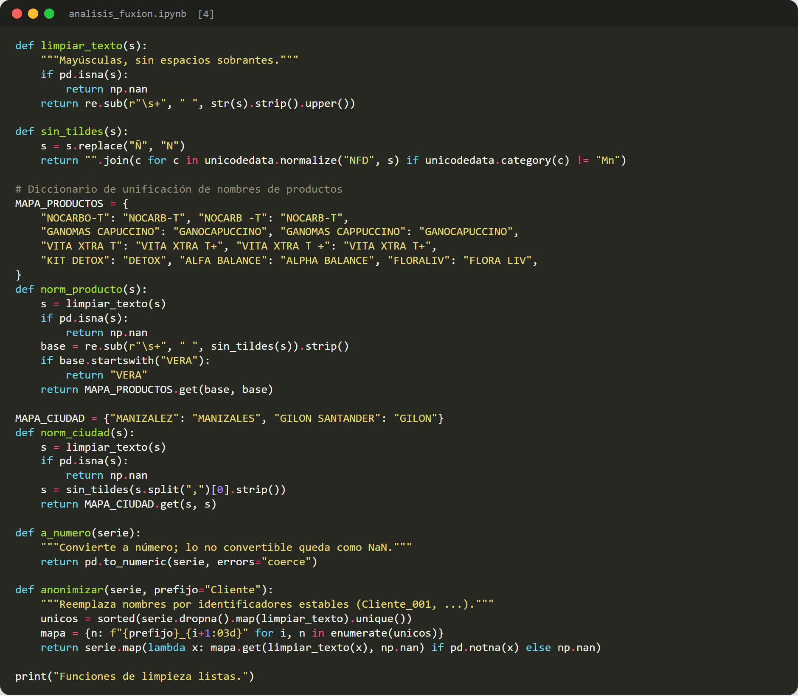
El reto principal es reconstruir las lineas de pedido a partir de los bloques con celdas combinadas. La estrategia: eliminar los encabezados repetidos; asignar un identificador de pedido (cada pedido trae su numero de orden en la primera linea); propagar (forward-fill) los datos a nivel de pedido dentro de cada bloque; y conservar solo las filas con un producto real, descartando los subtotales.
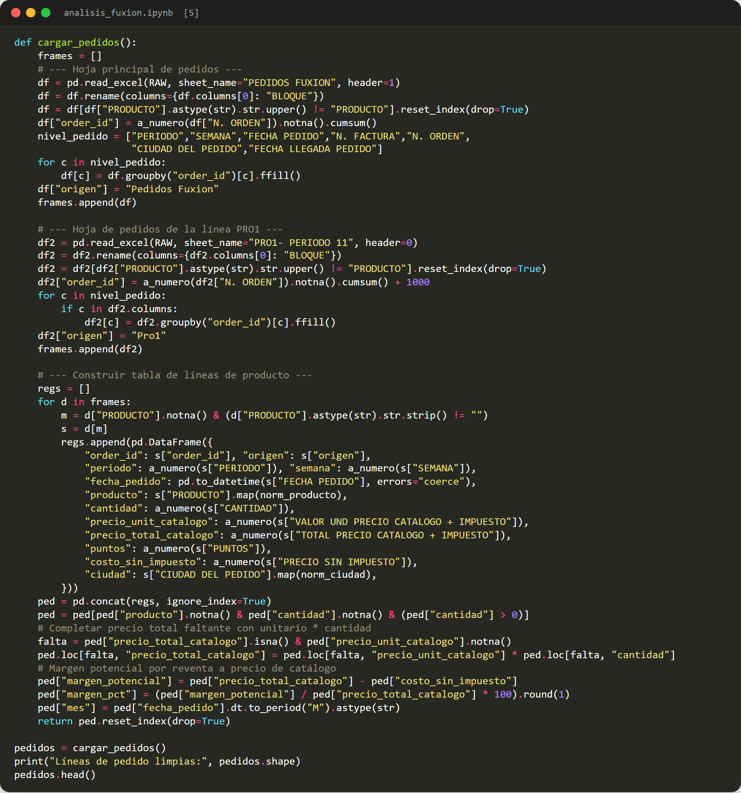
Se unifican las tres hojas de inventario (Manizales, Mocoa y PRO1) en una sola tabla; se deriva el estado de cada producto (Vendido, Consumo, Disponible, Producto gratis) y los dias para su vencimiento. Por privacidad, la columna de observaciones (texto libre con nombres de personas) se descarta tras extraer el estado.
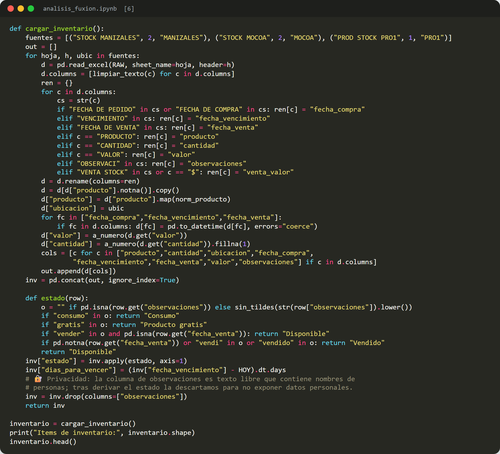
Se limpian las comisiones por venta directa, las afiliaciones (anonimizando los nombres) y se extrae la composicion de ganancias desde la hoja de resumen.
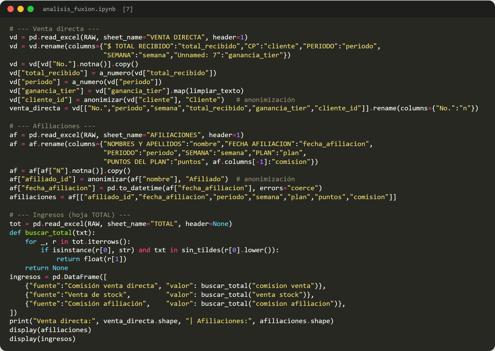
Tras la limpieza se revisan los valores ausentes. Los NaN originados por celdas combinadas se completaron por propagacion; los ausentes legitimos (por ejemplo, la fecha de venta de un producto aun en stock) se conservan porque representan informacion real del negocio. No se imputa a ciegas.
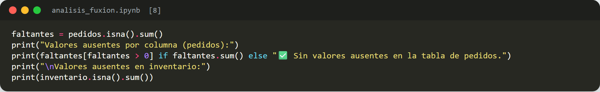
Los nombres de clientes y afiliados son datos personales; se reemplazan por identificadores irreversibles conservando la utilidad analitica sin exponer identidades.
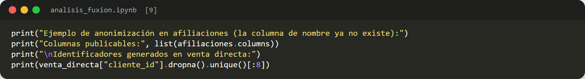
Se distinguen dos tipos de normalizacion: la de categorias (unificacion de nombres de productos y ciudades, ya aplicada) y la de variables numericas (escala Min-Max a rango 0-1) para poder compararlas en el analisis multivariado.
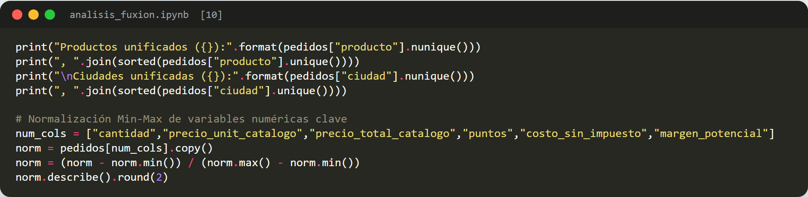
Se estudia cada variable por separado para entender su distribucion.
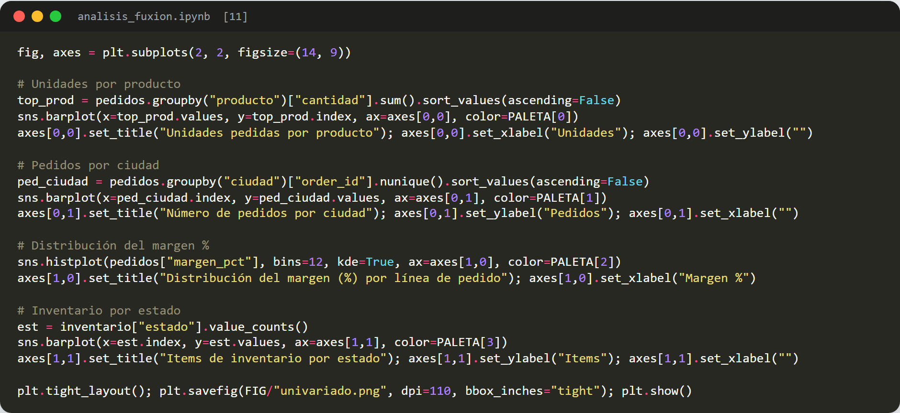
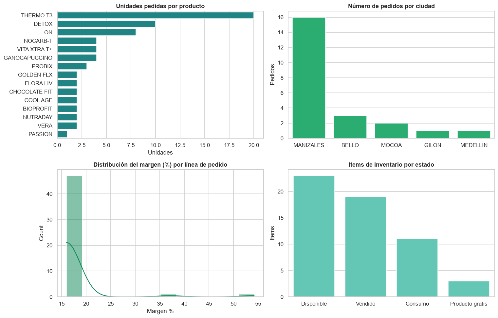
Lecturas: THERMO T3 domina la demanda en unidades, seguido por DETOX y ON; la operacion esta muy concentrada en Manizales; el margen por linea se agrupa alrededor del 16%; y el inventario combina productos vendidos, disponibles, de consumo propio y gratuitos.
Se relacionan pares de variables para descubrir asociaciones.
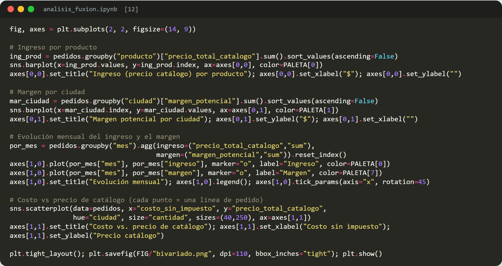
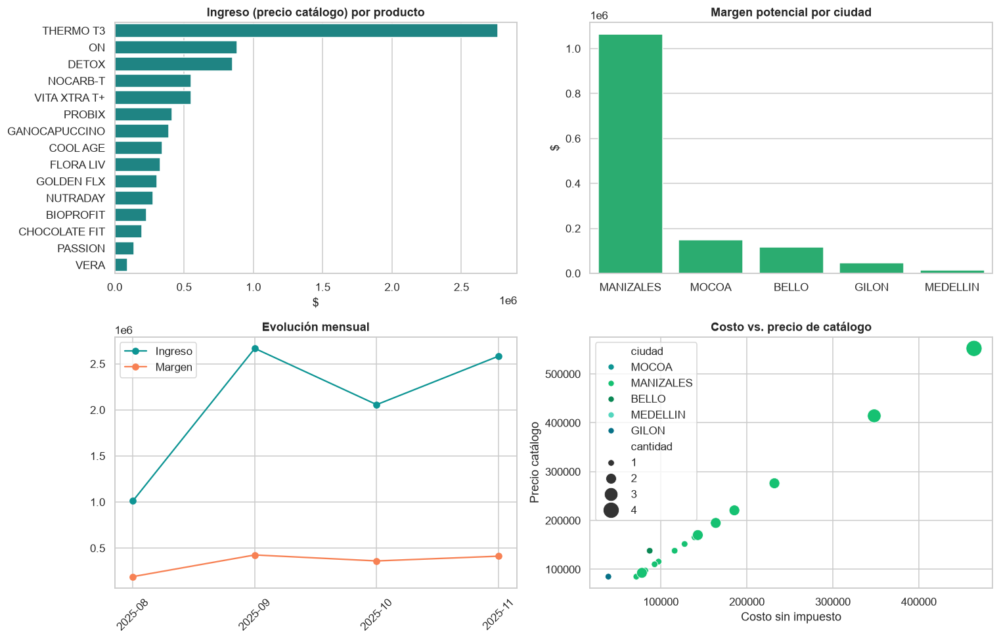
Lecturas: el ingreso confirma a THERMO T3 como motor del negocio; Manizales aporta la mayoria del margen; la serie mensual muestra los meses pico; y existe una relacion lineal estable entre costo y precio de catalogo (el margen porcentual es similar entre productos).
Se analizan varias variables a la vez: correlaciones y la relacion producto x ciudad.
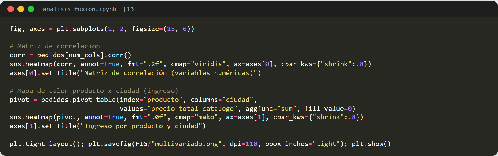
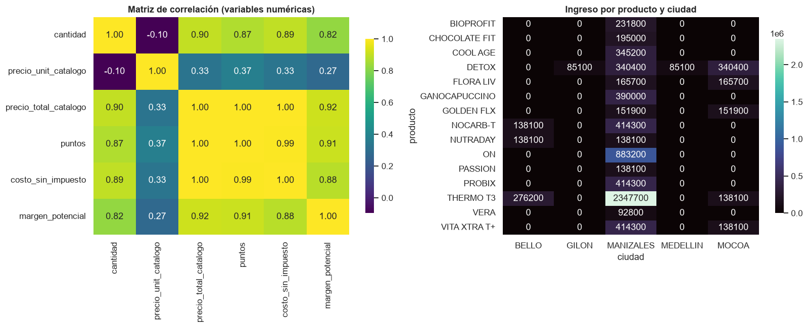
Lecturas: las variables monetarias (precio, costo, margen, puntos) estan fuertemente correlacionadas entre si; el mapa de calor producto x ciudad revela que productos sostienen cada plaza y confirma la dependencia de Manizales como mercado principal.
Uno de los hallazgos mas accionables: el capital inmovilizado y los productos por vencer.
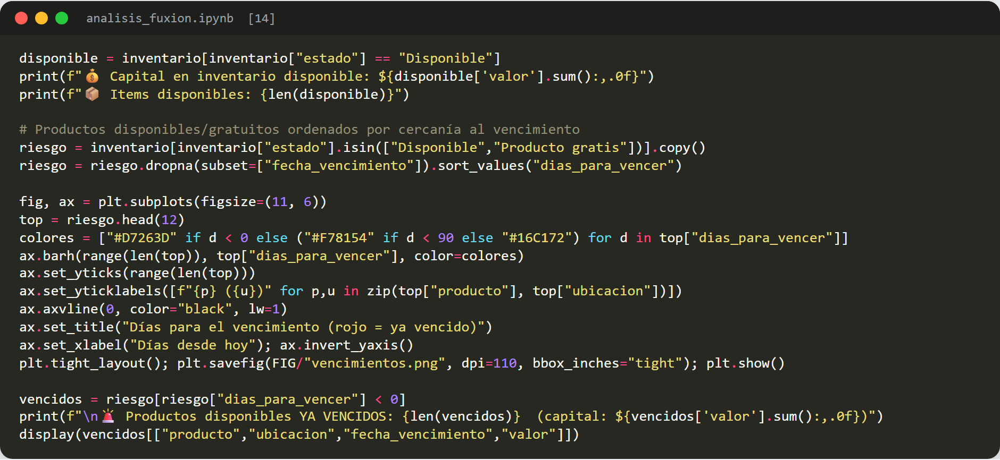
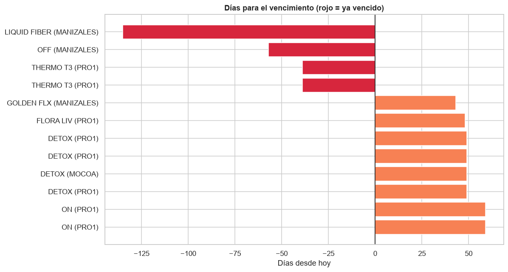
Hay $2.423.300 de capital en inventario disponible y productos que ya se vencieron sin venderse (Liquid Fiber, Off, Thermo T3), lo que representa una perdida directa de capital.
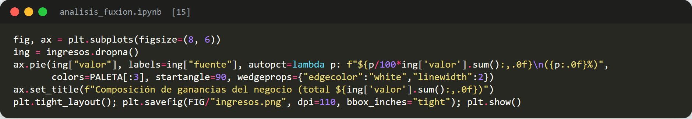
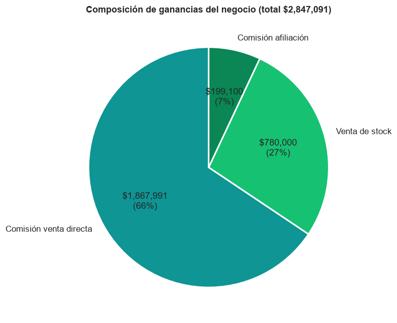
La comision por venta directa es la principal fuente de ganancia (66%), seguida por la venta de stock (27%); la afiliacion aun aporta poco (7%): una oportunidad de crecimiento.
Finalmente se guardan los datos limpios y anonimizados (CSV) y un archivo JSON con los agregados que alimentan el tablero interactivo publicado en GitHub Pages.
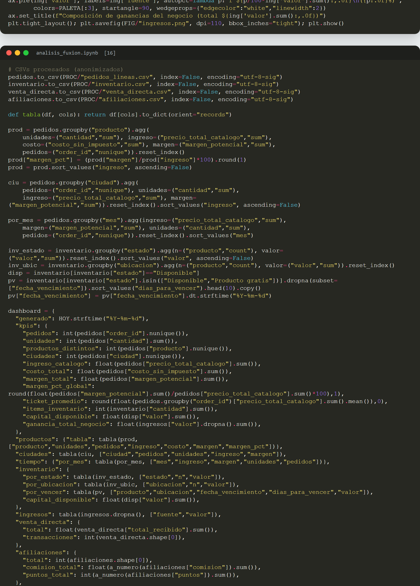
Hallazgos
Recomendaciones
El analisis exploratorio cumple las fases 1 a 3 del ciclo de vida de Machine Learning y convierte un registro manual y desordenado en conocimiento accionable. El emprendimiento cuenta ahora con un diagnostico basado en evidencia y un tablero interactivo para el seguimiento continuo, sentando las bases para futuras fases de modelado predictivo de la demanda.
Reproducir el analisis y regenerar las graficas: crear el entorno (python -m venv .venv), instalar requirements.txt y ejecutar el notebook (Kernel > Restart & Run All). Las figuras se guardan en informe/figuras/ y los datos del tablero en docs/data/.